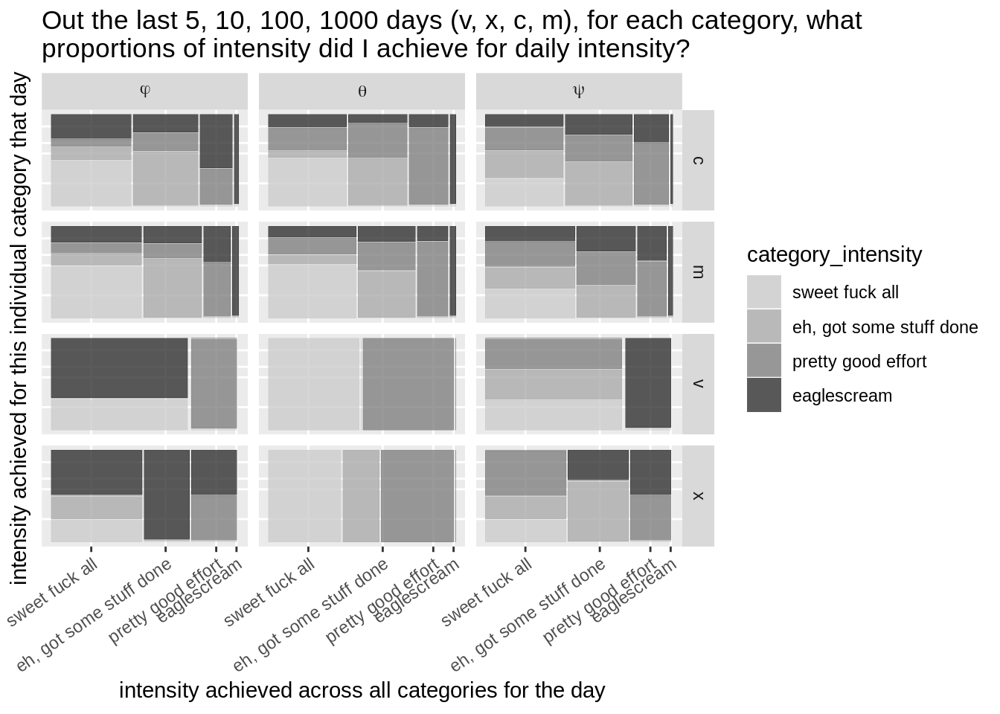

life's work
1
preamble
2
what is this?
2.1
version
3
analysis
3.1
workload intensity goals achieved
3.2
distribution of hrs spent per day per category
4
rituals
4.1
instantiate
4.2
day view
4.3
daily tasks
4.3.1
\(*\)
4.3.2
\(\sim\)
4.3.3
\(\varnothing\)
4.3.4
\(\pi\)
4.4
review
4.4.1
daily log
4.4.2
day view
4.4.3
minibreak peeps
4.5
task cycle
4.6
monthly log
4.7
pom goals
4.8
order of events
4.8.1
workday
4.8.2
wake up
4.8.3
evening
4.9
signifiers
5
ruminations
5.1
daily projects
5.2
pomodoros
5.3
lowtech
5.4
work with intent
5.5
mindful time isn’t wasted
5.6
\(\sim\)
beethoven piano sonata
Published with bookdown
life’s work
section 3
analysis
3.1
workload intensity goals achieved

3.2
distribution of hrs spent per day per category